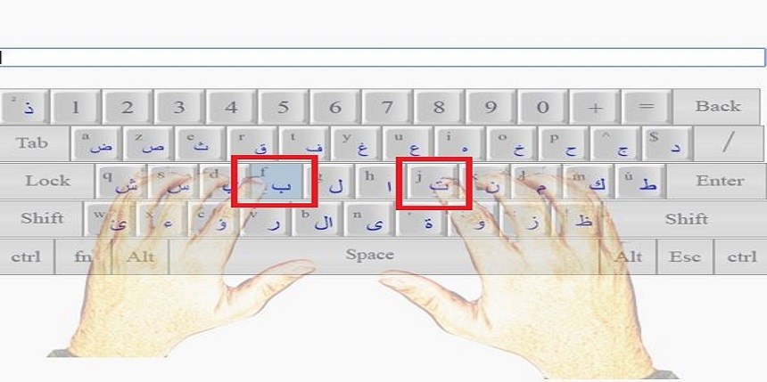
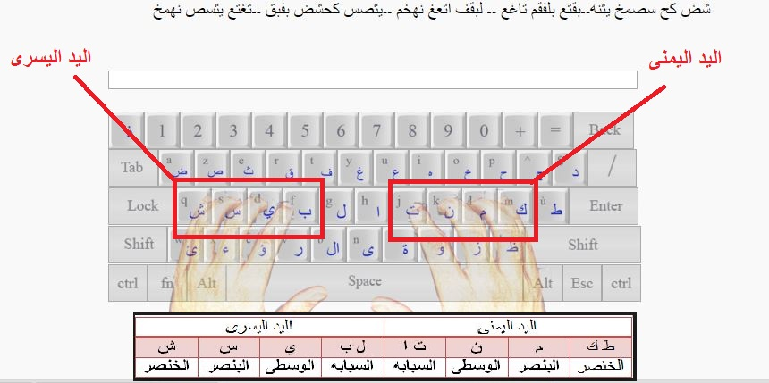
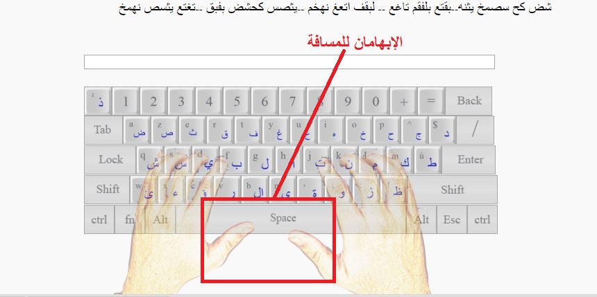

هناك صف في لوحة المفاتيح يسمى صف الإرتكاز، و هو الصف الأوسط من الصفوف التي يوجد عليها الحروف ، سوف يتم شرح كيفية وضع الاصابع في الصورة التالية

مكان وضع السبابتين :
تحسس حرف التاء وحرف الباء .. لاحظ وجود شيء مميز في الحرفين وهو بروز صغير على على الحرفين هنا توضع السبابتين .. يمكن تحديد هذين الحرفين دون النظر

تقسم حروف صف الارتكاز الى جهتين و نخصص اصابع كل يد لوضعها على جهة من جهتي صف الارتكاز، بحيت نضع اصابع اليد اليمنى على الجهة التي بها الحروف ك ، م ، ن ، ت و اليد اليسرى على الجهة التي بها الحروف ش ، س ، ي، ب اتباعا لماهو مبين في الجدول

أما الابهامان فيستخدمان لعمل المسافة بين الكلمتين : ابهام اليد اليمنى اذا كنا نستخدم حروف الجهة اليمنى، ابهام اليد اليسرى اذا كنا نستخدم حروف الجهة اليسرى
اما الحروف العليا على لوحة المفاتيح على مستوى الصف العلوي فتقسيمها كما يلي : حروف ( ع ، غ ) بسبابة اليد اليمنى و حروف (ف ، ق) بسبابة اليد اليسرى . و توزع باقي الحروف على أصابع اليد اليسرى و اليمنى بنفس طريقة صف الارتكاز .
عند كتابة أي حرف غير الحروف التي توضع عليها الأصابع على صف الإرتكاز .. استخدم الإصبع المكافئ للحرف صعوداً أو نزولاً .. بعد الإنتهاء من كتابة الحرف يجب أن يرجع الإصبع لمكانه الطبيعي على صف الإرتكاز